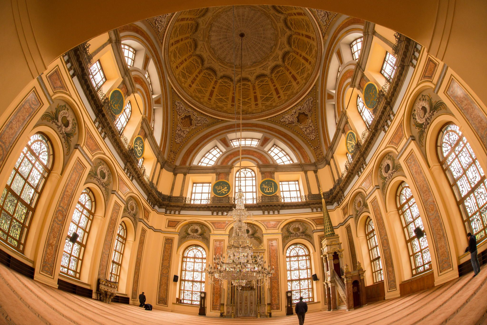
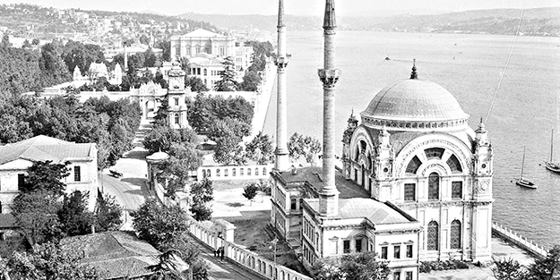

Dolmabahçe Camii
AçıklamaÇok sayıdaki vakıfları ile hayır sever bir şahsiyet olarak Osmanlı sosyal hayatında rol oynayan Bezmiâlem Vâlide Sultan’ın emriyle yapımına başlanmış, onun 1853 yılında vefatı üzerine oğlu Sultan Abdülmecid tarafından tamamlanmıştır. Bezmiâlem Vâlide Sultan Camii, Dolmabahçe Sarayı’nın Saat Kulesi yönündeki avlu kapısının tam karşısına düştüğü için yapıldığı günden beri Dolmabahçe Camii adıyla anılmış ve literatüre de bu şekilde geçmiştir.Yapının, evvelce avlunun Saat Kulesi’ne bakan kapısı üzerinde bulunan 1270 (1853-54) tarihli inşa kitâbesi, 1948 yılında Dolmabahçe Meydanı’nın açılması sırasında avlu duvarlarının yıkılması sebebiyle kıble dış duvarı dibindeki bugünkü yerine konulmuştur. Celî sülüs hatla yazılmış dört beyitten oluşan kitâbe tamamen Batı tarzında akant yapraklarıyla süslenmiştir ve tepelik kısmının ortasını Abdülmecid’in tuğrasını içeren büyük bir çelenk taçlandırmaktadır. Dolmabahçe Camii, XIX. yüzyıl Osmanlı mimarisinde pek çok önemli esere imzasını atan Nikogos Balyan tarafından Batı akımlarının en yoğun biçimde etkisini gösterdiği bir dönemde inşa edilmiştir. Bu dönemde barok, rokoko, empire (ampir) gibi üslûpların yerleşik sanat birikimi ve zevkiyle kaynaştırılması sonucunda ilginç bir yorumlama anlayışına gidilmiştir. Mimari açıdan bu tip camilerde önemli bir yenilik söz konusu olmazken asıl değişimin geleneksel çizginin, klasik oranların ve motif repertuvarının büyük ölçüde terkedilmesi suretiyle dış cephede ve süslemelerde gerçekleştirildiği görülür. Barok, rokoko ve empire tarzındaki süsleme özelliklerinin, geleneksel Osmanlı motiflerinin ve bezeme anlayışının yerini almaya başlaması dikkat çeker. Dönemin en önemli karakteri, mimariye “eklektik” (karma) yaklaşımın hâkim olması ve Batılı unsurların herhangi bir kurala bağlı kalmaksızın sınırsızca ve yer yer de Osmanlı ve İslâm unsurları ile karıştırılarak kullanılmasıdır. Bu bakımdan Dolmabahçe Camii, ait olduğu dönemin genel yaklaşımını ve sanat zevkini bütünüyle yansıtan tipik bir örnektir. Deniz kenarında bir avlu ortasında yapılmış olan camide ana hacim kubbe ile örtülmüş bir mekândan ibarettir. Kubbenin dört büyük kemerle taşındığı kare planlı yapıda mekânın enine dar, boyuna hayli uzun bir biçimde gelişerek prizma şeklini aldığı görülür. Alt kesimlerinde yuvarlak kemerli büyükçe pencerelerin açıldığı yüksek duvarların yüzeyi keskin hatlı, dışa taşkın kornişlerle üç bölüme ayrılmıştır. Hayli yüksek tutulan alt bölümde pencere araları ile köşelere iki kat halinde pilastırlar (gömme ayaklar) yerleştirilmiştir; orta bölümde de aynı düzen tekrarlanmış, yalnız burası daha dar tutulmuştur. Pencerelerden büyük olan ortadaki yuvarlak kemerli, yanlarındaki küçükler düz sövelidir; hepsinin arasına yine pilastırlar yerleştirilmiştir. Duvarların üst kısmında, doğrudan doğruya pandantiflerin yardımı ile kubbeyi taşımakta olan kemerler görülür. Yuvarlak kemerler, kendi eğimlerine uygun olarak bir yelpaze gibi dışa doğru açılan üçer pencere ile birer tympanon duvarı şeklinde inşa edilmiştir. Kubbe, klasik mimaride görülmeyen bir özellikle doğrudan doğruya duvarlar üzerine oturtulmuş, yüklenen ağırlıktan duvarların yanlara doğru açılmaması için de köşelere dikdörtgen biçimli yüksek ağırlık kuleleri yerleştirilmiştir. Orta kısımlarında oldukça iri birer yuvarlak rozet bulunan ağırlık kuleleri, aynı zamanda yapı ile uyumlu bir bütünlük gösteren dekoratif öğelerdir. Kulelerin üst köşelerine barok-rokoko tarzına uygun bir görüşle, üzerleri kubbe örtülü kompozit başlıklı ikişer sütunçe yerleştirilmiştir. Yapının üzerini örten pandantif geçişli merkezî kubbenin fazla geniş olmayan kasnak bölümü, dıştan konsollarla çepeçevre kuşatılarak dilimlere ayrılmış ve her dilimin içi çiçek rozetlerle dolgulanarak dekore edilmiştir. Dolmabahçe Meydanı’nın açılması sırasında avlu çevre duvarı ile cümle kapıları ve bazı birimleri ortadan kalkan caminin, önündeki Hünkâr Kasrı ile birlikte sergilediği bugünkü durum orijinal görünümünü yansıtmamaktadır. Caminin empire üslûptaki sekizgen planlı ve kubbeli muvakkithânesi ise meydan düzenleme çalışmaları esnasında cadde üzerinden kaldırılarak deniz tarafındaki halen bulunduğu yere nakledilmiştir. Taş ve mermerden inşa edilmiş olan caminin ön cephesini boylu boyunca iki yandan dışa taşan, iki katlı Hünkâr Kasrı kaplamaktadır. Kasır, iki yanda dışa çıkma yapan “L” biçimi kanat ile daha içeride kalan bir orta hacimden oluşmaktadır. Cami ile aynı malzemeden yapılmış olan kasırda, bütün cephelere açılan iki sıra halindeki pencerelerle son derece aydınlık ve ferah bir iç mekân elde edilmiştir. Küçük bir saray görünümünde olan bu yapıya, biri cephede cami ile ortak kullanılan, diğerleri yan cephelerde yer alan üç kapıdan girilmektedir. Birkaç basamakla ulaşılan bu kapılardan yandakilerin önlerinde sütunlu birer küçük giriş bölümü bulunur. Kasrın iki yanındaki merdivenlerle üst kata çıkılır. Bu kısımda odalar yer almakta ve ayrıca buradan mahfillere de geçilebilmektedir. Caminin bünyesinden ayrı tutulan minareler kasrın iki köşesinde yükselir. İnce, uzun formları ve yivli gövdeleriyle dikkat çeken minarelerde şerefe altları akant yaprakları ile süslenmiştir. Camiye Hünkâr Kasrı’nın antresinden girilir; burada da Hünkâr Kasrı’nda olduğu gibi duvarlara açılan çok sayıdaki pencereyle gayet aydınlık bir iç mekâna ulaşılmıştır. Zemini iri kırmızı tuğlalarla döşenmiş olan harimin kubbe içi ve pandantifleri yaldız ve yağlı boya kalem işleriyle tamamen Batı tarzında süslenmiştir. Renkli mermer işçiliği gösteren mihrap ve minberde de yine klasik çizgiden uzaklaşılarak birtakım barok bezemelere yer verilmiştir. Beşgen planlı mihrap nişinin üzerinde değişik tarzda çiçek ve yapraklardan oluşan bitkisel bir süslemeye gidilirken kitâbe levhasının üstüne de ortası çelenkle taçlandırılmış bir tepelik yerleştirilmiştir. Aynı tepeliğe pencere üzerlerinde de rastlanmakta ve böylece iç mekânın süslemesinde bir bütünlüğe ulaşma çabasına girildiği görülmektedir. Mihrap gibi iki renkli mermerden yapılmış olan minberin yekpâre korkuluk levhaları geometrik bezemelidir. 1948-1961 yılları arasında Hünkâr Kasrı ile birlikte Deniz Müzesi olarak kullanılan cami, müzenin yeni binasına taşınması üzerine tekrar ibadete açılmıştır. Bugün bakımlı durumda bulunan yapı, en son 1966 yılında Vakıflar Genel Müdürlüğü tarafından restore edilmiştir.
|
|   |
|
Açılış tarihi: 1855 Mimari tarz: Osmanlı Mimarisi Mimarlar: Garabet Amira Balyan |
|
|
Adres: Ömer Avni, Meclis-i Mebusan Cd. No:34, 34427 Beyoğlu/İstanbul |
|
|
Kapalı Günler Yok |